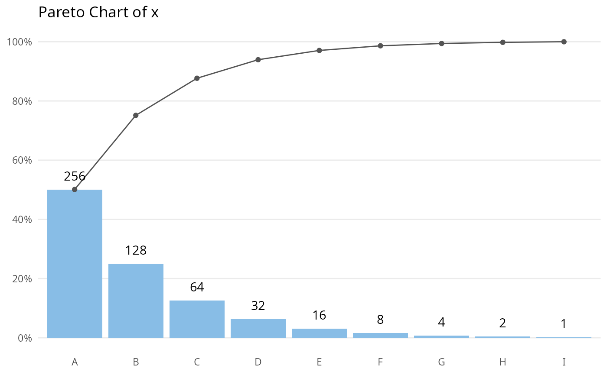

Creates a pareto chart from a categorical variable
Usage
paretochart(
x,
title = "",
subtitle = NULL,
caption = NULL,
ylab = NULL,
xlab = NULL,
x.angle = NULL,
useNA = FALSE,
print.data = FALSE
)Arguments
- x
Categorical variable to plot.
- title
Chart title.
- subtitle
Chart subtitle.
- caption
Chart caption.
- ylab
Y axis label.
- xlab
X axis label.
- x.angle
Number indicating the angle of x axis labels.
- useNA
If TRUE, NA values will be included in the analysis.
- print.data
If TRUE, prints data frame with results.
Examples
# Generate categorical vector
x <- rep(LETTERS[1:9], c(256, 128, 64, 32, 16, 8, 4, 2, 1))
# Make paretochart
paretochart(x)

# Save paretochart object to variable
p <- paretochart(x)
# Print data frame
p$data
#> x y y.cum p p.cum
#> 1 A 256 256 0.500978474 0.5009785
#> 2 B 128 384 0.250489237 0.7514677
#> 3 C 64 448 0.125244618 0.8767123
#> 4 D 32 480 0.062622309 0.9393346
#> 5 E 16 496 0.031311155 0.9706458
#> 6 F 8 504 0.015655577 0.9863014
#> 7 G 4 508 0.007827789 0.9941292
#> 8 H 2 510 0.003913894 0.9980431
#> 9 I 1 511 0.001956947 1.0000000